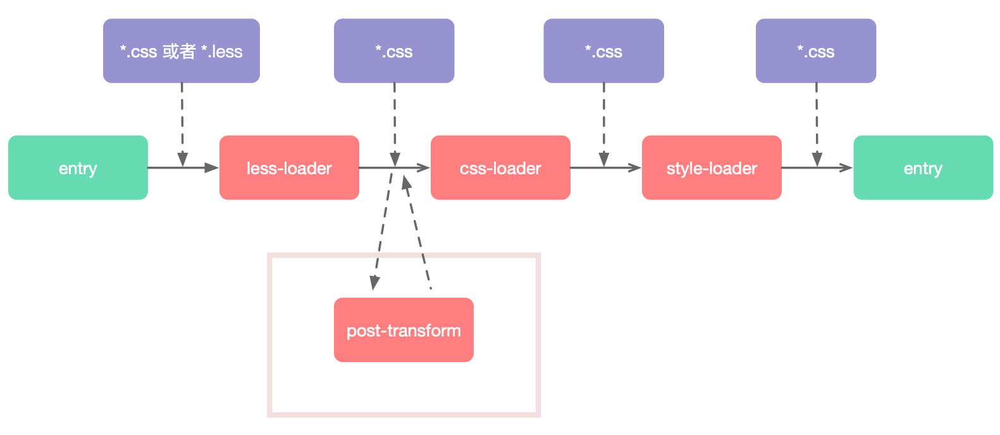
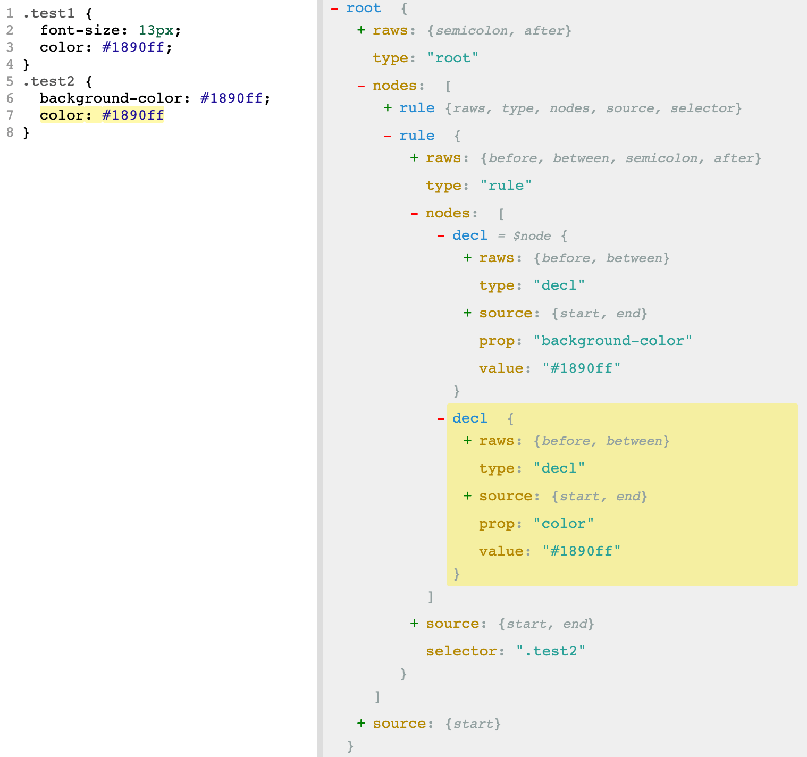
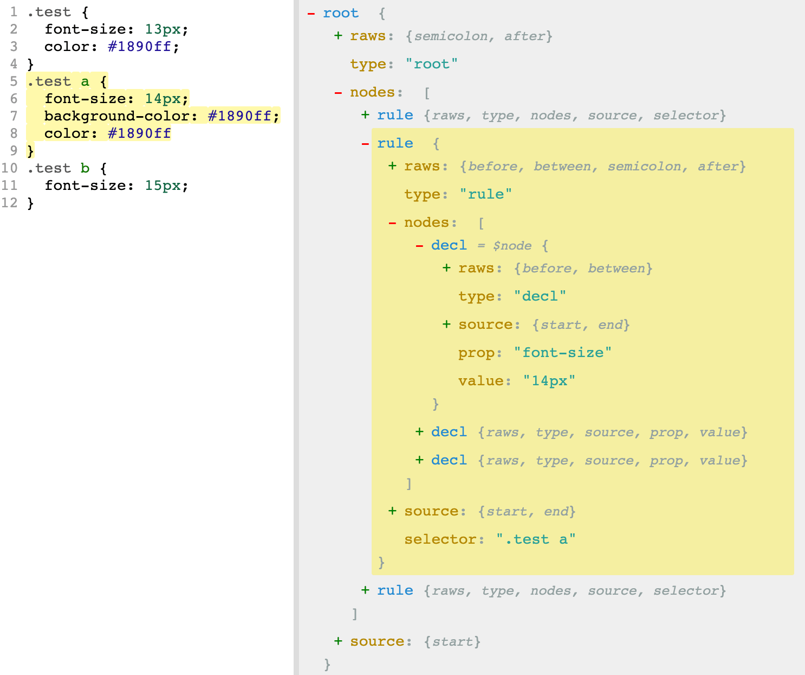
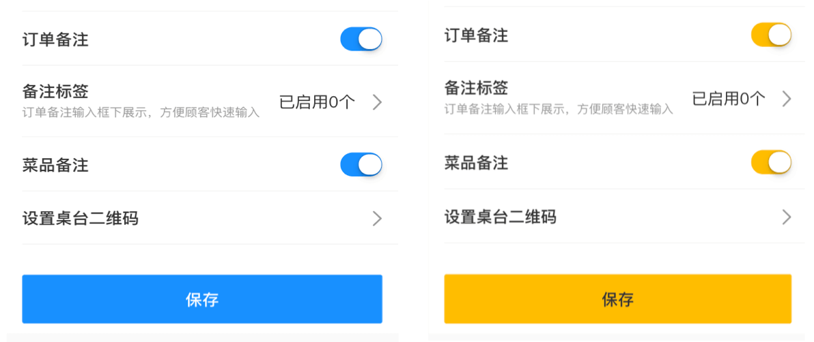

PostCss 是个好工具，基于它转换的 AST 可以做很多有趣的东西，这篇文章从一个实际的需求出发，教大家写一个可应用于 webapck 打包过程中 PostCss 插件，提供一种自动化处理 css 样式的思路。

需求背景
在后台前端应用的开发中，经常会用到各类 UI 组件库，假如项目中用到了知名的 antd，但是需要对应用的各个基础组件做一次换肤，而 antd 只有定制化的几种色号可选，这次要做的是将基础组件的色号都换成美团黄，所以 antd 没法满足需求。当然我们可以在样式表中手动改写 antd 的样式以达到目标，但是这并不方便。我们沿着自动化的思路想，可以在打包过程中对所有样式做统一处理并做一层转换，而样式的解析转换刚好是 loader 的工作，在此实现这一思路会非常合适。

开发思路
在项目中经常会用到 PostCss 做一些插件化的事情包括 AutoPrefixer 等，PostCss 会将 css 样式转为 AST 树方便处理，基于此可以对 AST 上的节点信息做一些处理以贴合本次的需求。如下是一个 PostCss 转换 css 的一个示例。来源于 astexplorer

转换后的结构就像包含了很多层级树一样，第一层是 root 节点，每个 css 文件就相当于一个 root 节点，每个 root 节点包含的是子节点集合即 type 为 rule 的节点，对应于 css 中的样式块，每个样式块即 type 为 decl 包含书写的 css 键值对集合，prop 对应于健，而 value 就是值了。可以想到，只要遍历获取这些值再转换目标值为需要的值即可。
程序设计
既然是做成插件化，则需考虑通用性，可从需求中提取通用性信息包括目标色值即美团黄和文件路径，可作为插件的入参。
PostCss 提供了很多 API 方便操作转换后 AST 树，此次分析后只用到如下遍历相关 API 即可
- walk: 遍历所有节点信息
- walkAtRules: 遍历所有 atrule 类型节点
- walkRules: 遍历所有 rule 类型节点
- walkComments: 遍历所有 comment 类型节点
- walkDecls: 遍历所有 decl 类型节点
PostCss 的作用只适用 css 样式文件，如果是预编译类型样式如 less，则需要先转换为 css 后再做处理，在配置 loader 时注意下先后顺序即可。插件的核心逻辑是获取到 decl 节点中的 value 并进行替换。
1 | const postcss = require('postcss'); |
以上通过模拟 cssStyle 模拟了 root，将 css 文件 cssStyle 作为源文件输入，首先通过 PostCss 转译为如下 AST 并深度遍历，先遍历 rule 节点再遍历 decl 节点，最后匹配 value 是否符合 config 中的 source，是则替换为美团黄。

引入插件
而如果在 webpack 中使用自定义的插件，则需要在 loaders 进行对应的配置，如下在 webapck 的 loaders 中，在 postcss 的 loader 中进行自定义插件的配置，并且将文件资源的路径传入检测路径是否匹配目标路径。
1 | { |
再对自定义插件做一些改写如下，即完成插件的引入，其中 root 代表每一个正在处理的 css 文件转化后的 AST。
1 | // postcss-transform-color.js |
实际的效果如下

总结
以上针对特定的需求写了一个简单的 PostCss 插件，该插件并不是非常的通用，可能是针对某些项目很适用，但插件大体的写法思路还是有迹可循的。